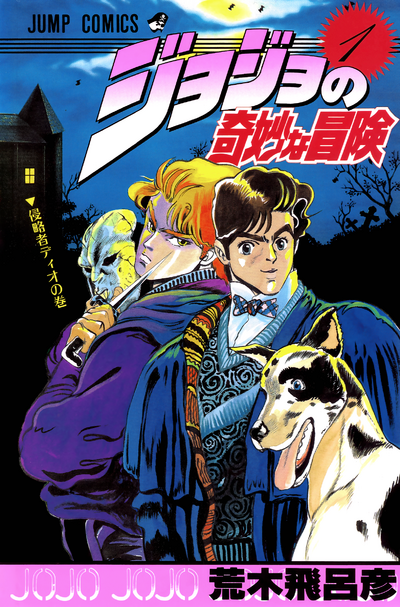
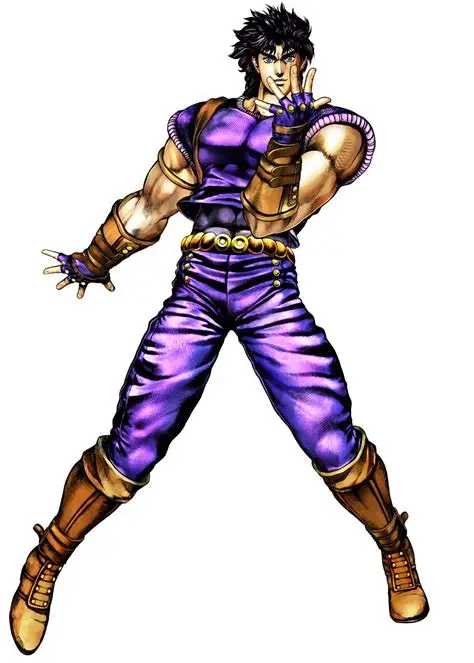
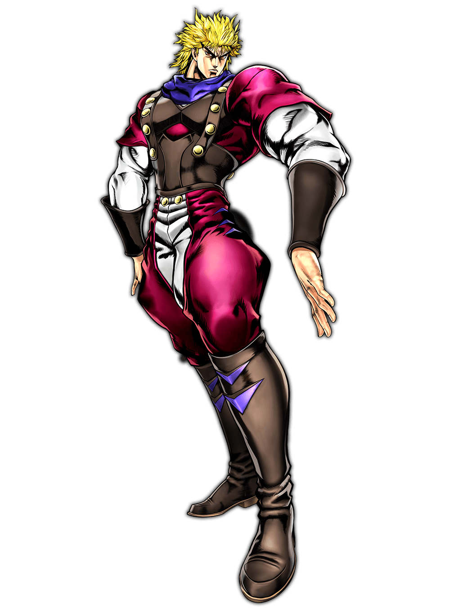
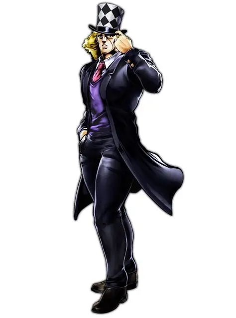
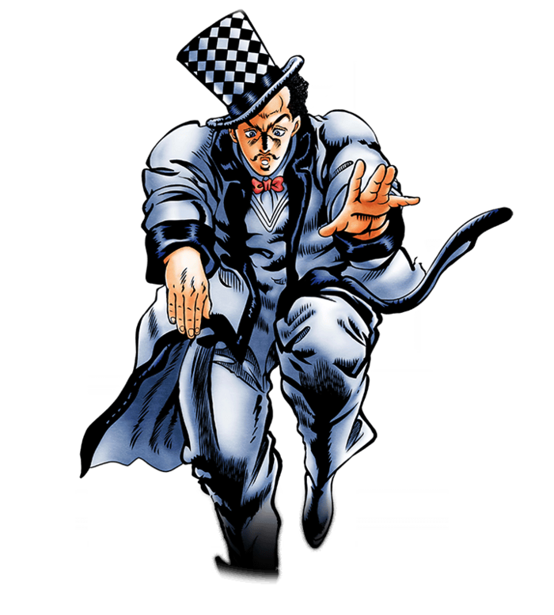

Parte 1: Phantom Blood

Sinopsis
Jonathan Joestar, un joven noble inglés, ve cómo su vida cambia con la llegada de Dio Brando, un muchacho ambicioso adoptado por su padre. Dio se hace con una antigua máscara de piedra que lo convierte en vampiro, y Jonathan aprende el Hamon para detenerlo.
🎵 Opening
| N.º | Canción | Artista | Año |
|---|---|---|---|
| 1 | Sono Chi no Sadame | Hiroaki "TOMMY" Tominaga | 2012 |
▶ Buscar el opening en YouTube
Personajes
| Imagen | Nombre | Rol | Descripción | Stand |
|---|---|---|---|---|
 | Jonathan Joestar | Protagonista | Maestro del Hamon, noble y de gran corazón. | - |
 | Dio Brando | Antagonista | Ambicioso, se convierte en vampiro con la máscara de piedra. | - |
 | Robert E. O. Speedwagon | Aliado | Antiguo delincuente que se vuelve amigo leal de Jonathan. | - |
 | William A. Zeppeli | Mentor | Le enseña el Hamon a Jonathan. | - |
Sistema de poder (pulsa para desplegar)
Esta parte no tiene Stands. Los combates se basan en el Hamon, una técnica de respiración que genera energía similar a la luz solar, letal para los vampiros.